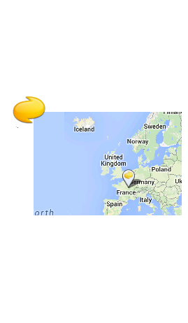
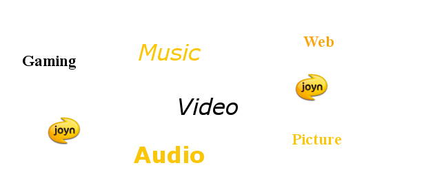

Learn how to get joyn up and running on an Android device.
The latest version is 3.2.1 release note.
Full documentation for joyn terminal APIs.
Discover the concepts used in the joyn APIs.
joyn™ is a certification trade mark of the GSMA (GSM Association) for RCS (Rich Communication Suite) which is an industry standard that is being adopted across the world by mobile operators. RCS is a set of new communication services to improve traditional communications with real times services.
This SDK offers the first implementation of the joyn API which is under standardization with GSMA and where Orange is the main contributor with several OEMs (Samsung, Qualcomm, Ericsson, Sony, HTC ...).
Enhance your app with joyn rich communication APIs. joyn APIs leverage the device address book to encourage social recommendation from your phone numbers ; provide rich messaging with chat, file transfer and group chat ; provide rich call experience with image and live video sharing during voice calls ; share your geolocation with your contacts; and offer the possibility to create your new joyn services.
Discover which services are supported by your contacts before do use them.
When installing a joyn application on a device, a contact gains the capabilities associated with the application. joyn APIs provide you with the capabilities associated with each contact of your native address book. Of course you can discover the core capabilities of joyn (chat, file transfer, .etc), but you can also declare and exchange new capabilities. Have a look at the Capability API to see how to implement these features in your application.
Add the real time instant messaging experience in your application.
May it be point-to-point or group conversations, sending messages (text or geoloc) with delivery reports and transfering files in real time to one or several contacts. Adding messaging features to games, social media or any application is simplified. Have a look at the Chat API and File transfer API to see how to implement these features in your application.
Share in real time images, videos and locations during your phone calls.

With joyn APIs it is possible to share images, live videos and geolocations during a phone call. Take a live photo or film your favourite event, share it in real time and continue to comment it by phone. Have a look at the Image sharing API, Video sharing API and Geoloc sharing API to see how to implement these features in your application.
Share your geolocation with your contacts.
Share your geolocation with your contacts via a chat or during a rich call. Have a look at the Chat API and Geoloc sharing API to see how to implement these features in your application.
With the Multimedia Session API concept you can create new joyn services from your application. The API offers the way to initiate the new communication channel between contacts, then it's up to the application to implement the media corresponding to its service (gaming, music, video, audio, ..., any media). 
Have a look at our dedicated tutorial to better grasp the potential of the Multimedia Session API.
Learn how to get joyn up and running on an Android device.
The latest version is 3.2.1 release note.
Full documentation for joyn terminal APIs.
Discover the concepts used in the joyn APIs.